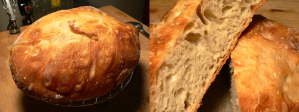

No-knead bread redux

Congratulations, fellow food bloggers. Because of us, Mark Bittman has written a follow-up article about Jim Lahey’s no-knead bread.
In the last few weeks Jim Lahey’s recipe has been translated into German, baked in Togo, discussed on more than 200 blogs and written about in other newspapers. It has changed the lives (their words, not mine) of veteran and novice bakers.
Bittman goes into more detail about weight, proofing and baking time, pot size, yeast, and salt. He also reminded me that I should remove the handle of my Le Creuset Dutch oven, which can suffer damage above 400ºF. It’s worth a read if you’re as obsessed with this bread as the rest of us.
Comments
Cool! Now I don’t have to write a follow-up post myself! Thanks.
Wow, that’s a real testament to the power of blogging! I didn’t know that about the knobs on the Le Creuset, though. I did see that someone had recommended that those of us using “knock-offs” not put them in such a hot oven, because their knobs definitely wouldn’t be able to withstand the heat, but I forgot all about that on Monday and put mine in. It may fall off in my hand the next time I try to use it but so far looks okay. I wonder if covering it with foil would help? Because I can’t imagine how you would remove the lid without the knob!
I’m definitely using my Silpat under the loaf next time, and discarding that extra water that had formed in the bottom of the bowl (if I can), because I think that made it too soft.
WHAT!TEESE ANRNT BAGGETS!IM LOOKING FOR PROPPER ONES! AND ALSO WHAT DO THE FRENCH COOK THEM IN???
If you want proper baguettes buy them at a good bakery like the French do. This bread never purported to be baguettes.
Add a comment